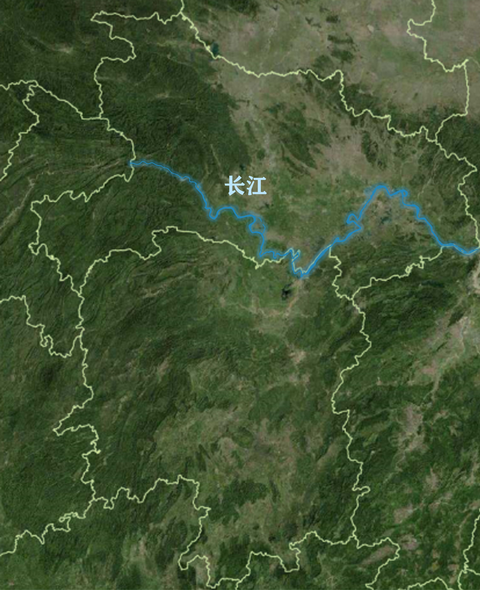
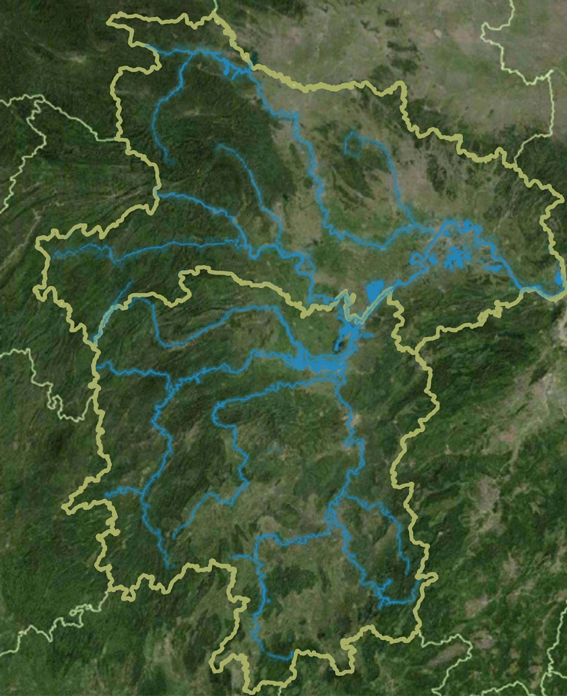
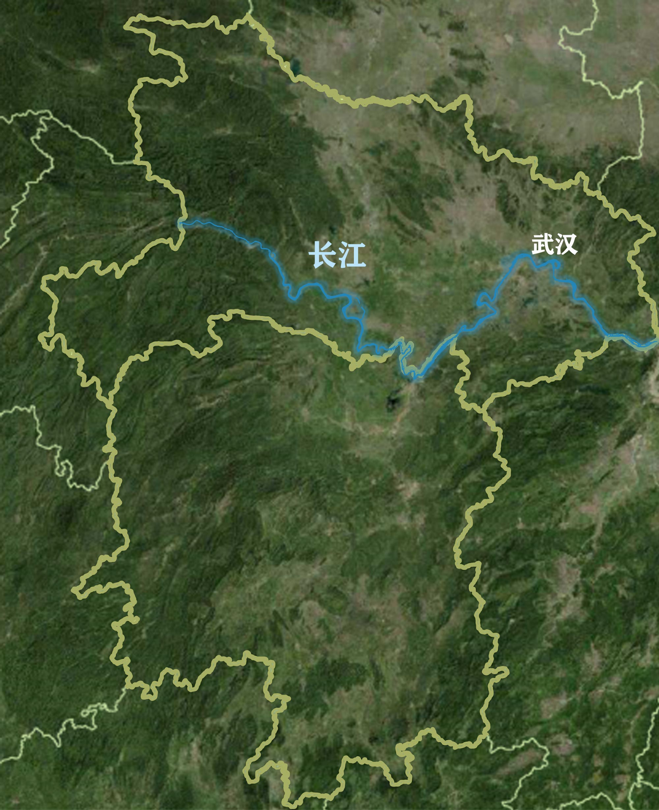
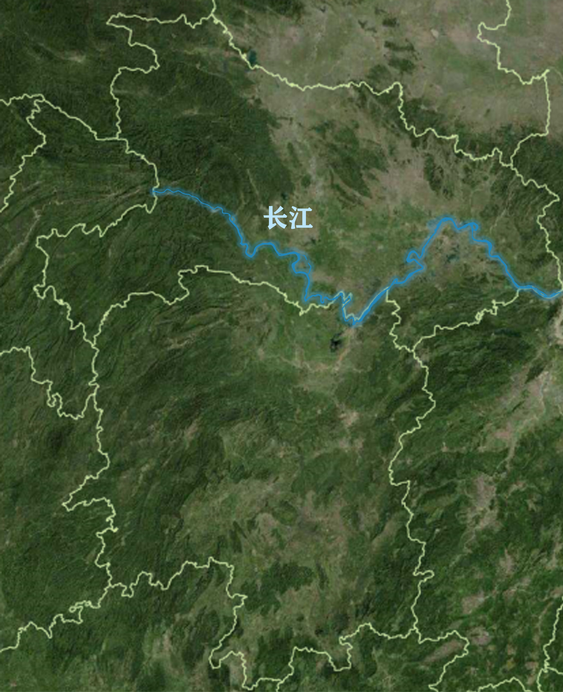
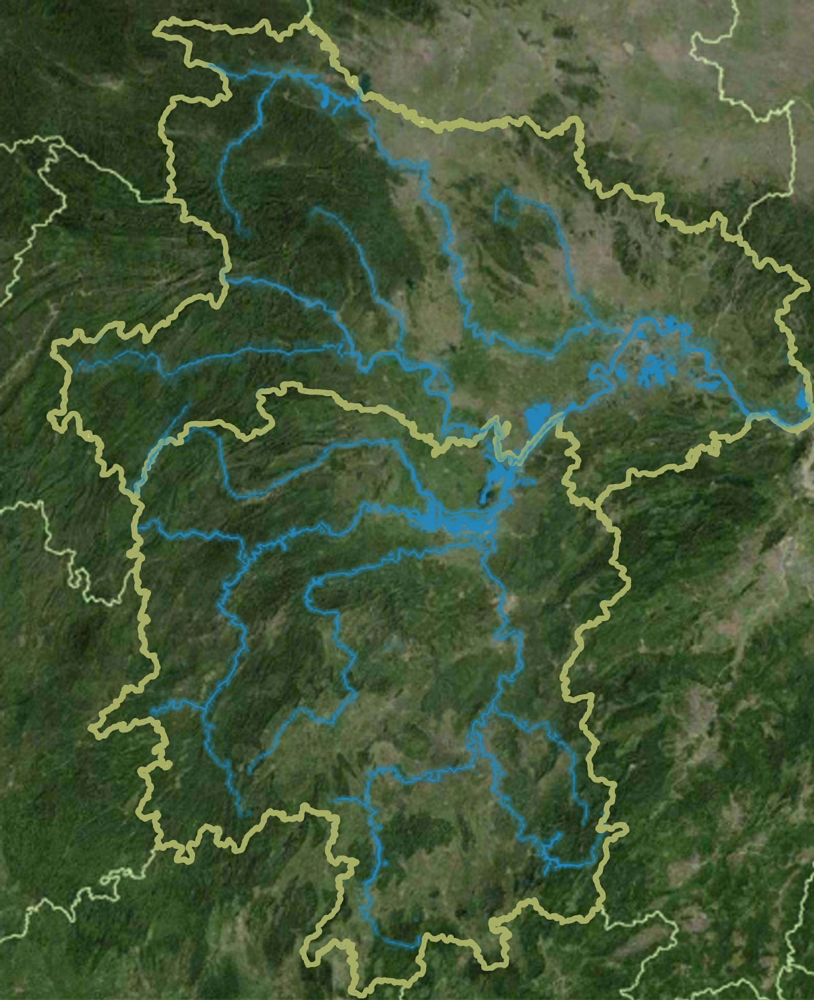
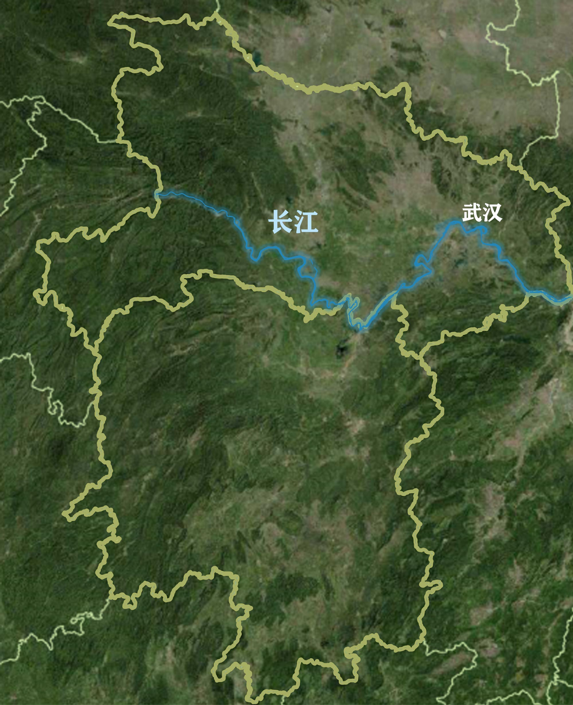

参考资料：
[1] 新闻宣传司.应急管理部发布2020年7月全国自然灾害情况[EB/OL].https://www.mem.gov.cn/xw/bndt/202008/t20200804_354411.shtml,2020-08-04.
[2] 张建云,王银堂,贺瑞敏,胡庆芳,宋晓猛.中国城市洪涝问题及成因分析[J].水科学进展,2016,27(04):485-491.
[3] 黄荣辉,陈栋,刘永.中国长江流域洪涝灾害和持续性暴雨的发生特征及成因[J].成都信息工程学院学报,2012,27(01):1-19.
[4] 张庆云,陶诗言,彭京备.我国灾害性天气气候事件成因机理的研究进展[J].大气科学,2008(04):815-825.
[5] 王栋.试析淮河洪涝灾害成因[J].科技导报,2005(09):14-16.
[6] 三联生活周刊.南方洪水致百万人受灾，治理难点在哪？[EB/OL].http://finance.sina.com.cn/wm/2020-06-18/doc-iirczymk7758409.shtml,2020-06-18.
[7] 新华网.武汉今年平均降雨总量居历史同期第3位[EB/OL].http://m.xinhuanet.com/hb/2020-07/14/c_1126237124.htm,2020-7-14.
[8] 长江日报.武汉经受梅雨期八轮强降雨考验，55座外排泵站发挥主力军作用，城市排涝能力将继续加强[EB/OL].http://swj.wuhan.gov.cn/swyw/jcss/202007/t20200731_1413247.html,2020-7-31.
[9] 国务院办公厅.国务院办公厅关于推进海绵城市建设的指导意见[EB/OL].http://www.gov.cn/zhengce/content/2015-10/16/content_10228.htm,2015-10-11.
[10] 湖北省人民政府门户网站.武汉市将投资134亿元打造四新、青山两大海绵城市示范区[EB/OL].http://www.hubei.gov.cn/zwgk/szsmlm/shzqb/201508/t20150811_702078.shtml?&from=androidqq,2015-8-11.
[11] 武汉市规划研究院.武汉市海绵城市专项规划[EB/OL].http://www.wpdi.cn/project-3-i_11332.htm,2017-10-11.
[12] 庞金翠.海绵城市建设在市政道路中的应用[J].山西建筑,2020,46(16):155-157.
[13] 窠旭亮.基于海绵城市建设需求的给排水设计要点分析[J].科学技术创新,2020(22):118-119.
[14] 魏宁宁.绿色屋顶在城市雨洪管理中的应用研究综述[J].山东国土资源,2019,35(10):64-70.
[15] 湖北日报.22年的变与不变 今夏抗洪与98抗洪对照思辨[EB/OL].https://mp.weixin.qq.com/s?__biz=MzIwNjA4MDczNg==&mid=2654382307&idx=1&sn=e408e71e1e92d5feaaab258d199d652d&chksm=8ce5176cbb929e7af8470256a18b0575cd64cfedb471c76109177beb8b75ff9562f202df129c&token=230550220&lang=zh_CN#rd,2020-08-17.
[16] 湖北日报.挡水，更要容水 防汛大考刷新治水理念[EB/OL].http://yjt.hubei.gov.cn/fbjd/dtyw/zhxx/202008/t20200820_2813538.shtml,2020-08-20.


 




